DSAN 5300: Statistical Learning
Spring 2025, Georgetown University
Monday, January 13, 2025
What happens to my dependent variable \(Y\) when my independent variable \(X\) changes by 1 unit?
Whenever you carry out a regression, keep the goal in the front of your mind:
The Goal of Regression
Find a line \(\widehat{y} = mx + b\) that best predicts \(Y\) for given values of \(X\)
\[ \DeclareMathOperator*{\argmax}{argmax} \DeclareMathOperator*{\argmin}{argmin} \newcommand{\bigexp}[1]{\exp\mkern-4mu\left[ #1 \right]} \newcommand{\bigexpect}[1]{\mathbb{E}\mkern-4mu \left[ #1 \right]} \newcommand{\definedas}{\overset{\text{defn}}{=}} \newcommand{\definedalign}{\overset{\phantom{\text{defn}}}{=}} \newcommand{\eqeventual}{\overset{\text{eventually}}{=}} \newcommand{\Err}{\text{Err}} \newcommand{\expect}[1]{\mathbb{E}[#1]} \newcommand{\expectsq}[1]{\mathbb{E}^2[#1]} \newcommand{\fw}[1]{\texttt{#1}} \newcommand{\given}{\mid} \newcommand{\green}[1]{\color{green}{#1}} \newcommand{\heads}{\outcome{heads}} \newcommand{\iid}{\overset{\text{\small{iid}}}{\sim}} \newcommand{\lik}{\mathcal{L}} \newcommand{\loglik}{\ell} \DeclareMathOperator*{\maximize}{maximize} \DeclareMathOperator*{\minimize}{minimize} \newcommand{\mle}{\textsf{ML}} \newcommand{\nimplies}{\;\not\!\!\!\!\implies} \newcommand{\orange}[1]{\color{orange}{#1}} \newcommand{\outcome}[1]{\textsf{#1}} \newcommand{\param}[1]{{\color{purple} #1}} \newcommand{\pgsamplespace}{\{\green{1},\green{2},\green{3},\purp{4},\purp{5},\purp{6}\}} \newcommand{\prob}[1]{P\left( #1 \right)} \newcommand{\purp}[1]{\color{purple}{#1}} \newcommand{\sign}{\text{Sign}} \newcommand{\spacecap}{\; \cap \;} \newcommand{\spacewedge}{\; \wedge \;} \newcommand{\tails}{\outcome{tails}} \newcommand{\Var}[1]{\text{Var}[#1]} \newcommand{\bigVar}[1]{\text{Var}\mkern-4mu \left[ #1 \right]} \]
library(tidyverse)
set.seed(5321)
N <- 11
x <- seq(from = 0, to = 1, by = 1 / (N - 1))
y <- x + rnorm(N, 0, 0.2)
mean_y <- mean(y)
spread <- y - mean_y
df <- tibble(x = x, y = y, spread = spread)
ggplot(df, aes(x=x, y=y)) +
geom_abline(slope=1, intercept=0, linetype="dashed", color=cbPalette[1], linewidth=g_linewidth*2) +
geom_segment(xend=(x+y)/2, yend=(x+y)/2, linewidth=g_linewidth*2, color=cbPalette[2]) +
geom_point(size=g_pointsize) +
coord_equal() +
xlim(0, 1) + ylim(0, 1) +
dsan_theme("half") +
labs(
title = "Principal Component Line"
)
ggplot(df, aes(x=x, y=y)) +
geom_abline(slope=1, intercept=0, linetype="dashed", color=cbPalette[1], linewidth=g_linewidth*2) +
geom_segment(xend=x, yend=x, linewidth=g_linewidth*2, color=cbPalette[2]) +
geom_point(size=g_pointsize) +
coord_equal() +
xlim(0, 1) + ylim(0, 1) +
dsan_theme("half") +
labs(
title = "Regression Line"
)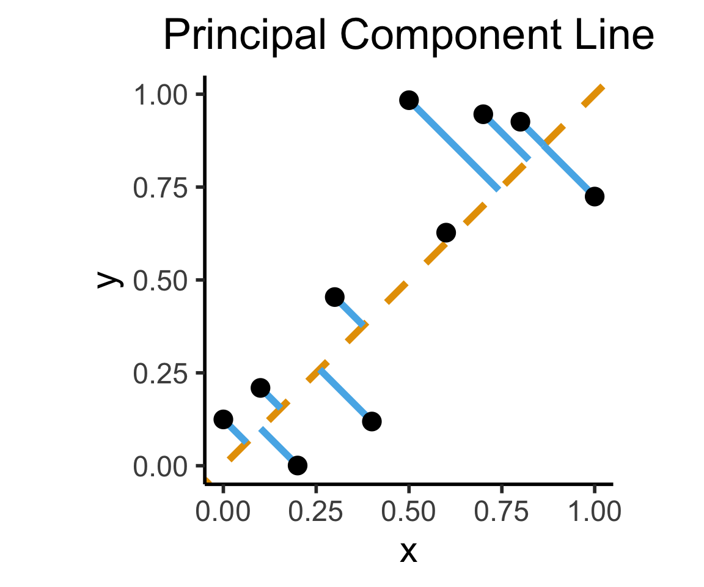
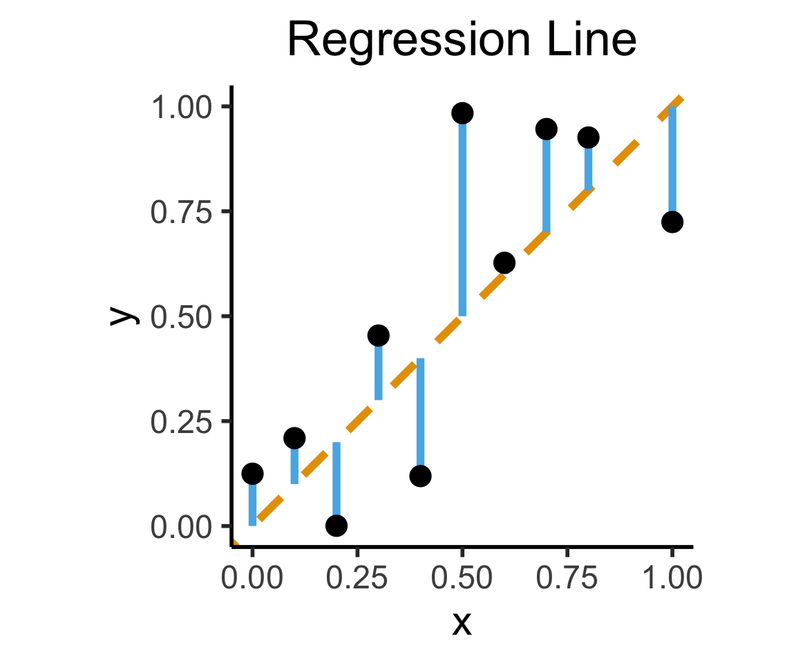
library(tidyverse)
ad_df <- read_csv("assets/Advertising.csv") |> rename(id=`...1`)
long_df <- ad_df |> pivot_longer(-c(id, sales), names_to="medium", values_to="allocation")
long_df |> ggplot(aes(x=allocation, y=sales)) +
geom_point() +
facet_wrap(vars(medium), scales="free_x") +
geom_smooth(method='lm', formula="y ~ x") +
theme_dsan() +
labs(
x = "Allocation ($1K)",
y = "Sales (Units)"
)library(tidyverse)
gdp_df <- read_csv("assets/gdp_pca.csv")
mil_plot <- gdp_df |> ggplot(aes(x=industrial, y=military)) +
geom_point(size=0.5*g_pointsize) +
geom_smooth(method='lm', formula="y ~ x", linewidth=1) +
theme_dsan() +
labs(
title="Military Exports vs. Industrialization",
x="Industrial Production (% of GDP)",
y="Military Exports (% of All Exports)"
)
mil_plotFor now, we treat Newspaper, Radio, TV advertising separately: how much do sales increase per $1 into [medium]? (Later we’ll consider them jointly: multiple regression)
Our model:
\[ Y = \underbrace{\param{\beta_0}}_{\mathclap{\text{Intercept}}} + \underbrace{\param{\beta_1}}_{\mathclap{\text{Slope}}}X + \varepsilon \]
This model generates predictions via
\[ \widehat{y} = \underbrace{\widehat{\beta_0}}_{\mathclap{\small\begin{array}{c}\text{Estimated} \\[-5mm] \text{intercept}\end{array}}} ~+~ \underbrace{\widehat{\beta_1}}_{\mathclap{\small\begin{array}{c}\text{Estimated} \\[-4mm] \text{slope}\end{array}}}\cdot x \]
Note how these predictions will be wrong (unless the data is perfectly linear)
We’ve accounted for this in our model (by including \(\varepsilon\) term)!
But, we’d like to find estimates \(\widehat{\beta}_0\) and \(\widehat{\beta}_1\) that produce the “least wrong” predictions: motivates focus on residuals…
What can we optimize to ensure these residuals are as small as possible?
N <- 21
x <- seq(from = 0, to = 1, by = 1 / (N - 1))
y <- x + rnorm(N, 0, 0.25)
mean_y <- mean(y)
spread <- y - mean_y
sim_lg_df <- tibble(x = x, y = y, spread = spread)
sim_lg_df |> ggplot(aes(x=x, y=y)) +
geom_abline(slope=1, intercept=0, linetype="dashed", color=cbPalette[1], linewidth=g_linewidth) +
# geom_segment(xend=x, yend=x, linewidth=g_linewidth*2, color=cbPalette[2]) +
geom_segment(aes(xend=x, yend=x, color=ifelse(y>x,"Positive","Negative")), linewidth=1.5*g_linewidth) +
geom_point(size=g_pointsize) +
# coord_equal() +
theme_dsan("half") +
scale_color_manual("Spread", values=c("Positive"=cbPalette[3],"Negative"=cbPalette[6]), labels=c("Positive"="Positive","Negative"="Negative")) +
labs(
title = "Regression Line"
)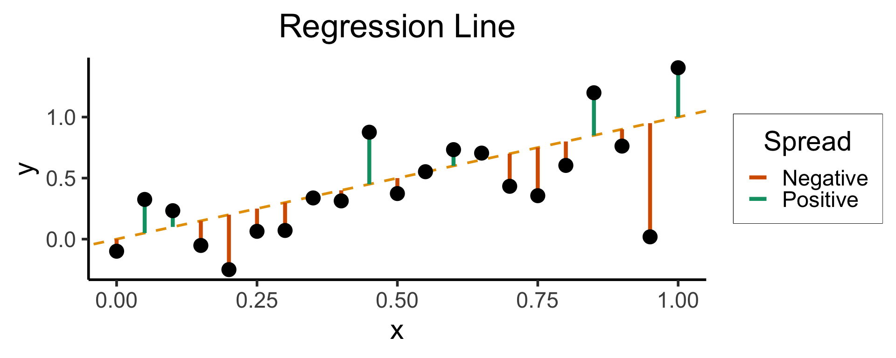
N <- 21
x <- seq(from = 0, to = 1, by = 1 / (N - 1))
y <- x + rnorm(N, 0, 0.05)
mean_y <- mean(y)
spread <- y - mean_y
sim_sm_df <- tibble(x = x, y = y, spread = spread)
sim_sm_df |> ggplot(aes(x=x, y=y)) +
geom_abline(slope=1, intercept=0, linetype="dashed", color=cbPalette[1], linewidth=g_linewidth) +
# geom_segment(xend=x, yend=x, linewidth=g_linewidth*2, color=cbPalette[2]) +
geom_segment(aes(xend=x, yend=x, color=ifelse(y>x,"Positive","Negative")), linewidth=1.5*g_linewidth) +
geom_point(size=g_pointsize) +
# coord_equal() +
theme_dsan("half") +
scale_color_manual("Spread", values=c("Positive"=cbPalette[3],"Negative"=cbPalette[6]), labels=c("Positive"="Positive","Negative"="Negative")) +
labs(
title = "Regression Line"
)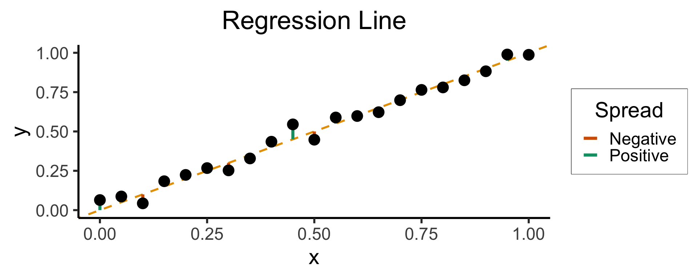
\[ \widehat{y} = \underbrace{\widehat{\beta}_0}_{\mathclap{\small\begin{array}{c}\text{Estimated} \\[-5mm] \text{intercept}\end{array}}} ~+~ \underbrace{\widehat{\beta}_1}_{\mathclap{\small\begin{array}{c}\text{Estimated} \\[-4mm] \text{slope}\end{array}}}\cdot x \]
is chosen so that
\[ \widehat{\theta} = \left(\widehat{\beta}_0, \widehat{\beta}_1\right) = \argmin_{\beta_0, \beta_1}\left[ \sum_{x_i \in X} \left(~~\overbrace{\widehat{y}(x_i)}^{\mathclap{\small\text{Predicted }y}} - \overbrace{\expect{Y \mid X = x_i}}^{\small \text{Avg. }y\text{ when }x = x_i}\right)^{2~} \right] \]
\[ Y = \beta_1 X + \varepsilon \]
library(latex2exp)
set.seed(5300)
# rand_slope <- log(runif(80, min=0, max=1))
# rand_slope[41:80] <- -rand_slope[41:80]
# rand_lines <- tibble::tibble(
# id=1:80, slope=rand_slope, intercept=0
# )
# angles <- runif(100, -pi/2, pi/2)
angles <- seq(from=-pi/2, to=pi/2, length.out=50)
possible_lines <- tibble::tibble(
slope=tan(angles), intercept=0
)
num_points <- 30
x_vals <- runif(num_points, 0, 1)
y0_vals <- 0.5 * x_vals + 0.25
y_noise <- rnorm(num_points, 0, 0.07)
y_vals <- y0_vals + y_noise
rand_df <- tibble::tibble(x=x_vals, y=y_vals)
title_exp <- latex2exp("Parameter Space ($\\beta_1$)")
# Main plot object
gen_lines_plot <- function(point_size=2.5) {
lines_plot <- rand_df |> ggplot(aes(x=x, y=y)) +
geom_point(size=point_size) +
geom_hline(yintercept=0, linewidth=1.5) +
geom_vline(xintercept=0, linewidth=1.5) +
# Point at origin
geom_point(data=data.frame(x=0, y=0), aes(x=x, y=y), size=4) +
xlim(-1,1) +
ylim(-1,1) +
# coord_fixed() +
theme_dsan_min(base_size=28)
return(lines_plot)
}
main_lines_plot <- gen_lines_plot()
main_lines_plot +
# Parameter space of possible lines
geom_abline(
data=possible_lines,
aes(slope=slope, intercept=intercept, color='possible'),
# linetype="dotted",
# linewidth=0.75,
alpha=0.25
) +
# True DGP
geom_abline(
aes(
slope=0.5,
intercept=0.25,
color='true'
), linewidth=1, alpha=0.8
) +
scale_color_manual(
element_blank(),
values=c('possible'="black", 'true'=cb_palette[2]),
labels=c('possible'="Possible Fits", 'true'="True DGP")
) +
remove_legend_title() +
labs(
title=title_exp
)rc1_df <- possible_lines |> slice(n() - 14)
# Predictions for this choice
rc1_pred_df <- rand_df |> mutate(
y_pred = rc1_df$slope * x,
resid = y - y_pred
)
rc1_label <- latex2exp(paste0("Estimate 1: $\\beta_1 \\approx ",round(rc1_df$slope, 3),"$"))
rc1_lines_plot <- gen_lines_plot(point_size=5)
rc1_lines_plot +
geom_abline(
data=rc1_df,
aes(intercept=intercept, slope=slope),
linewidth=2,
color=cb_palette[1]
) +
geom_segment(
data=rc1_pred_df,
aes(x=x, y=y, xend=x, yend=y_pred),
# color=cb_palette[1]
) +
xlim(0, 1) + ylim(0, 1) +
labs(
title = rc1_label
)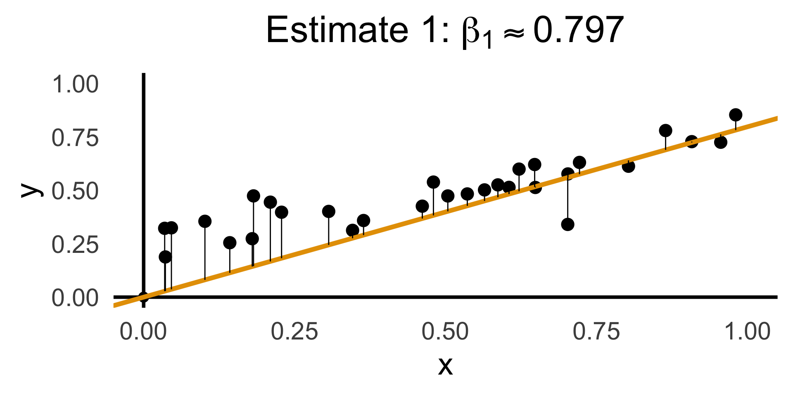
gen_resid_plot <- function(pred_df) {
rc_rss <- sum((pred_df$resid)^2)
rc_resid_label <- latex2exp(paste0("Residuals: RSS $\\approx$ ",round(rc_rss,3)))
rc_resid_plot <- pred_df |> ggplot(aes(x=x, y=resid)) +
geom_point(size=5) +
geom_hline(
yintercept=0,
color=cb_palette[1],
linewidth=1.5
) +
geom_segment(
aes(xend=x, yend=0)
) +
theme_dsan(base_size=28) +
theme(axis.line.x = element_blank()) +
labs(
title=rc_resid_label
)
return(rc_resid_plot)
}
rc1_resid_plot <- gen_resid_plot(rc1_pred_df)
rc1_resid_plot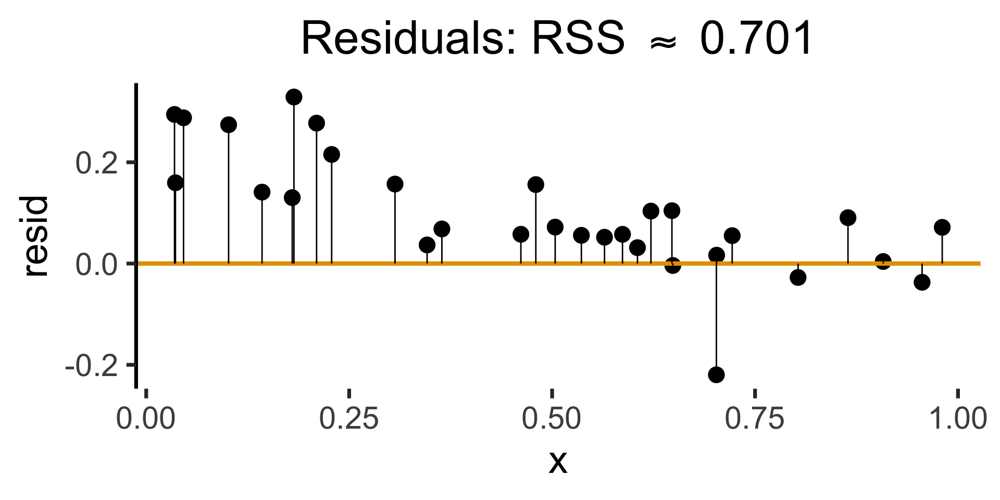
rc2_df <- possible_lines |> slice(n() - 9)
# Predictions for this choice
rc2_pred_df <- rand_df |> mutate(
y_pred = rc2_df$slope * x,
resid = y - y_pred
)
rc2_label <- latex2exp(paste0("Estimate 2: $\\beta_1 \\approx ",round(rc2_df$slope,3),"$"))
rc2_lines_plot <- gen_lines_plot(point_size=5)
rc2_lines_plot +
geom_abline(
data=rc2_df,
aes(intercept=intercept, slope=slope),
linewidth=2,
color=cb_palette[3]
) +
geom_segment(
data=rc2_pred_df,
aes(
x=x, y=y, xend=x,
yend=ifelse(y_pred <= 1, y_pred, Inf)
)
# color=cb_palette[1]
) +
xlim(0, 1) + ylim(0, 1) +
labs(
title=rc2_label
)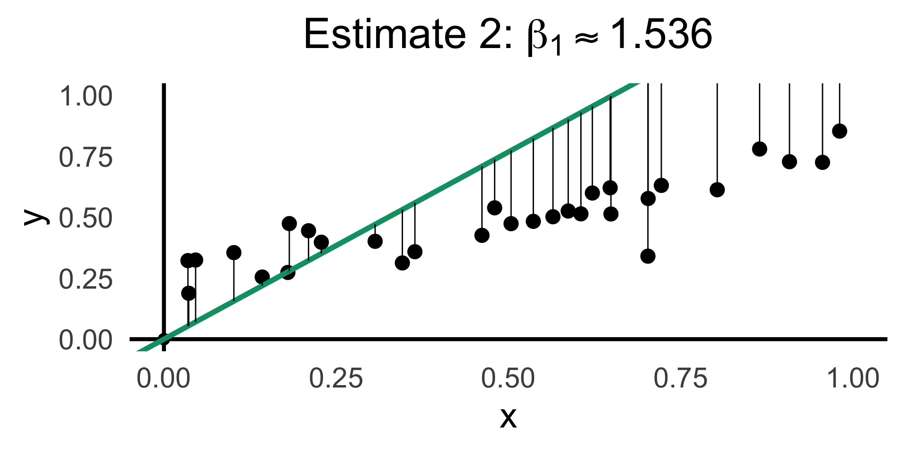
\[ \begin{align*} \beta_1^* = \argmin_{\beta_1}\left[ \sum_{i=1}^{n}(\widehat{y}_i - y_i)^2 \right] = \argmin_{\beta_1}\left[ \sum_{i=1}^{n}(\beta_1x_i - y_i)^2 \right] \end{align*} \]
We can compute this derivative to obtain:
\[ \frac{\partial}{\partial\beta_1}\left[ \sum_{i=1}^{n}(\beta_1x_i - y_i)^2 \right] = \sum_{i=1}^{n}\frac{\partial}{\partial\beta_1}(\beta_1x_i - y_i)^2 = \sum_{i=1}^{n}2(\beta_1x_i - y_i)x_i \]
And our first-order condition means that:
\[ \sum_{i=1}^{n}2(\beta_1^*x_i - y_i)x_i = 0 \iff \beta_1^*\sum_{i=1}^{n}x_i^2 = \sum_{i=1}^{n}x_iy_i \iff \boxed{\beta_1^* = \frac{\sum_{i=1}^{n}x_iy_i}{\sum_{i=1}^{n}x_i^2}} \]
R vs. statsmodelslm()
Call:
lm(formula = sales ~ TV, data = ad_df)
Residuals:
Min 1Q Median 3Q Max
-8.3860 -1.9545 -0.1913 2.0671 7.2124
Coefficients:
Estimate Std. Error t value Pr(>|t|)
(Intercept) 7.032594 0.457843 15.36 <2e-16 ***
TV 0.047537 0.002691 17.67 <2e-16 ***
---
Signif. codes: 0 '***' 0.001 '**' 0.01 '*' 0.05 '.' 0.1 ' ' 1
Residual standard error: 3.259 on 198 degrees of freedom
Multiple R-squared: 0.6119, Adjusted R-squared: 0.6099
F-statistic: 312.1 on 1 and 198 DF, p-value: < 2.2e-16General syntax:
smf.ols()
OLS Regression Results
==============================================================================
Dep. Variable: sales R-squared: 0.612
Model: OLS Adj. R-squared: 0.610
No. Observations: 200 F-statistic: 312.1
Covariance Type: nonrobust Prob (F-statistic): 1.47e-42
==============================================================================
coef std err t P>|t| [0.025 0.975]
------------------------------------------------------------------------------
Intercept 7.0326 0.458 15.360 0.000 6.130 7.935
TV 0.0475 0.003 17.668 0.000 0.042 0.053
==============================================================================
Notes:
[1] Standard Errors assume that the covariance matrix of the errors is correctly specified.General syntax:
Call:
lm(formula = military ~ industrial, data = gdp_df)
Residuals:
Min 1Q Median 3Q Max
-2.3354 -1.0997 -0.3870 0.6081 6.7508
Coefficients:
Estimate Std. Error t value Pr(>|t|)
(Intercept) 0.61969 0.59526 1.041 0.3010
industrial 0.05253 0.02019 2.602 0.0111 *
---
Signif. codes: 0 '***' 0.001 '**' 0.01 '*' 0.05 '.' 0.1 ' ' 1
Residual standard error: 1.671 on 79 degrees of freedom
(8 observations deleted due to missingness)
Multiple R-squared: 0.07895, Adjusted R-squared: 0.06729
F-statistic: 6.771 on 1 and 79 DF, p-value: 0.01106| Estimate | Std. Error | t value | Pr(>|t|) | ||
|---|---|---|---|---|---|
| (Intercept) | 0.61969 | 0.59526 | 1.041 | 0.3010 | |
| industrial | 0.05253 | 0.02019 | 2.602 | 0.0111 | * |
| \(\widehat{\beta}\) | Uncertainty | Test stat \(t\) | How extreme is \(t\)? | Signif. Level |
\[ \widehat{y} \approx \class{cb1}{\overset{\beta_0}{\underset{\small \pm 0.595}{0.620}}} + \class{cb2}{\overset{\beta_1}{\underset{\small \pm 0.020}{0.053}}} \cdot x \]
| Estimate | Std. Error | t value | Pr(>|t|) | ||
|---|---|---|---|---|---|
| (Intercept) | 0.61969 | 0.59526 | 1.041 | 0.3010 | |
| industrial | 0.05253 | 0.02019 | 2.602 | 0.0111 | * |
| \(\widehat{\beta}\) | Uncertainty | Test stat \(t\) | How extreme is \(t\)? | Signif. Level |
library(ggplot2)
int_tstat <- 1.041
int_tstat_str <- sprintf("%.02f", int_tstat)
label_df_int <- tribble(
~x, ~y, ~label,
0.25, 0.05, paste0("P(t > ",int_tstat_str,")\n= 0.3")
)
label_df_signif_int <- tribble(
~x, ~y, ~label,
2.7, 0.075, "95% Signif.\nCutoff"
)
funcShaded <- function(x, lower_bound, upper_bound){
y <- dnorm(x)
y[x < lower_bound | x > upper_bound] <- NA
return(y)
}
funcShadedIntercept <- function(x) funcShaded(x, int_tstat, Inf)
funcShadedSignif <- function(x) funcShaded(x, 1.96, Inf)
ggplot(data=data.frame(x=c(-3,3)), aes(x=x)) +
stat_function(fun=dnorm, linewidth=g_linewidth) +
geom_vline(aes(xintercept=int_tstat), linewidth=g_linewidth, linetype="dashed") +
geom_vline(aes(xintercept = 1.96), linewidth=g_linewidth, linetype="solid") +
stat_function(fun = funcShadedIntercept, geom = "area", fill = cbPalette[1], alpha = 0.5) +
stat_function(fun = funcShadedSignif, geom = "area", fill = "grey", alpha = 0.333) +
geom_text(label_df_int, mapping = aes(x = x, y = y, label = label), size = 10) +
geom_text(label_df_signif_int, mapping = aes(x = x, y = y, label = label), size = 8) +
# Add single additional tick
scale_x_continuous(breaks=c(-2, 0, int_tstat, 2), labels=c("-2","0",int_tstat_str,"2")) +
dsan_theme("quarter") +
labs(
title = "t Value for Intercept",
x = "t",
y = "Density"
) +
theme(axis.text.x = element_text(colour = c("black", "black", cbPalette[1], "black")))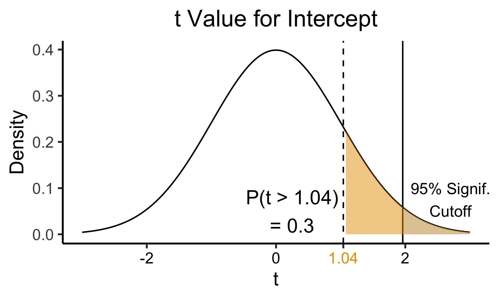
library(ggplot2)
coef_tstat <- 2.602
coef_tstat_str <- sprintf("%.02f", coef_tstat)
label_df_coef <- tribble(
~x, ~y, ~label,
3.65, 0.06, paste0("P(t > ",coef_tstat_str,")\n= 0.01")
)
label_df_signif_coef <- tribble(
~x, ~y, ~label,
1.05, 0.03, "95% Signif.\nCutoff"
)
funcShadedCoef <- function(x) funcShaded(x, coef_tstat, Inf)
ggplot(data=data.frame(x=c(-4,4)), aes(x=x)) +
stat_function(fun=dnorm, linewidth=g_linewidth) +
geom_vline(aes(xintercept=coef_tstat), linetype="dashed", linewidth=g_linewidth) +
geom_vline(aes(xintercept=1.96), linetype="solid", linewidth=g_linewidth) +
stat_function(fun = funcShadedCoef, geom = "area", fill = cbPalette[2], alpha = 0.5) +
stat_function(fun = funcShadedSignif, geom = "area", fill = "grey", alpha = 0.333) +
# Label shaded area
geom_text(label_df_coef, mapping = aes(x = x, y = y, label = label), size = 10) +
# Label significance cutoff
geom_text(label_df_signif_coef, mapping = aes(x = x, y = y, label = label), size = 8) +
coord_cartesian(clip = "off") +
# Add single additional tick
scale_x_continuous(breaks=c(-4, -2, 0, 2, coef_tstat, 4), labels=c("-4", "-2","0", "2", coef_tstat_str,"4")) +
dsan_theme("quarter") +
labs(
title = "t Value for Coefficient",
x = "t",
y = "Density"
) +
theme(axis.text.x = element_text(colour = c("black", "black", "black", "black", cbPalette[2], "black")))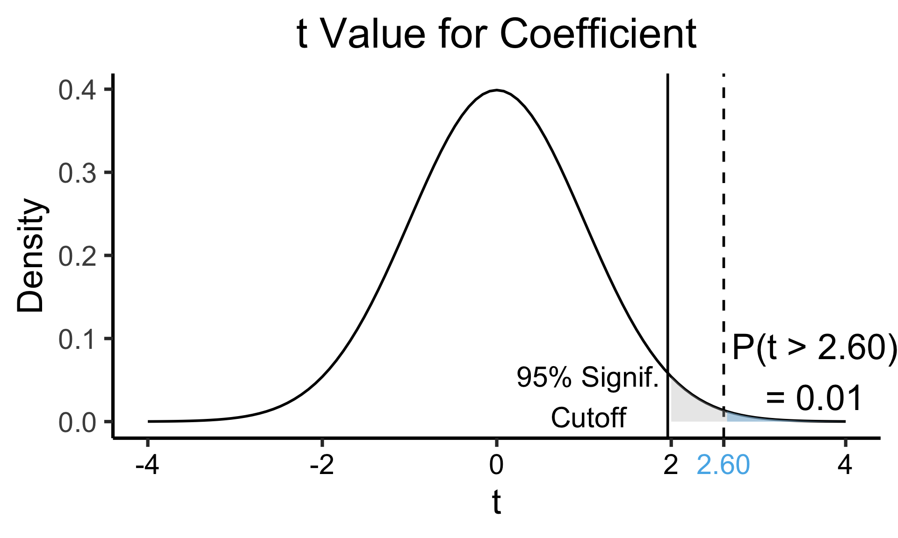
library(broom)
gdp_resid_df <- augment(gdp_model)
ggplot(gdp_resid_df, aes(x = industrial, y = .resid)) +
geom_point(size = g_pointsize/2) +
geom_hline(yintercept=0, linetype="dashed") +
dsan_theme("quarter") +
labs(
title = "Residual Plot for Military ~ Industrial",
x = "Fitted Value",
y = "Residual"
)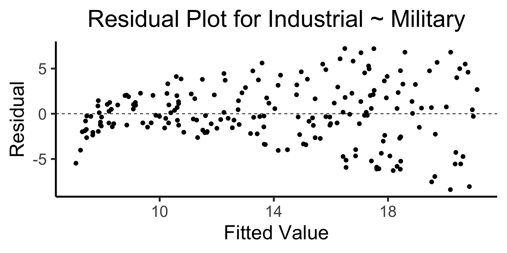
x <- 1:80
errors <- rnorm(length(x), 0, x^2/1000)
y <- x + errors
het_model <- lm(y ~ x)
df_het <- augment(het_model)
ggplot(df_het, aes(x = .fitted, y = .resid)) +
geom_point(size = g_pointsize / 2) +
geom_hline(yintercept = 0, linetype = "dashed") +
dsan_theme("quarter") +
labs(
title = "Residual Plot for Heteroskedastic Data",
x = "Fitted Value",
y = "Residual"
)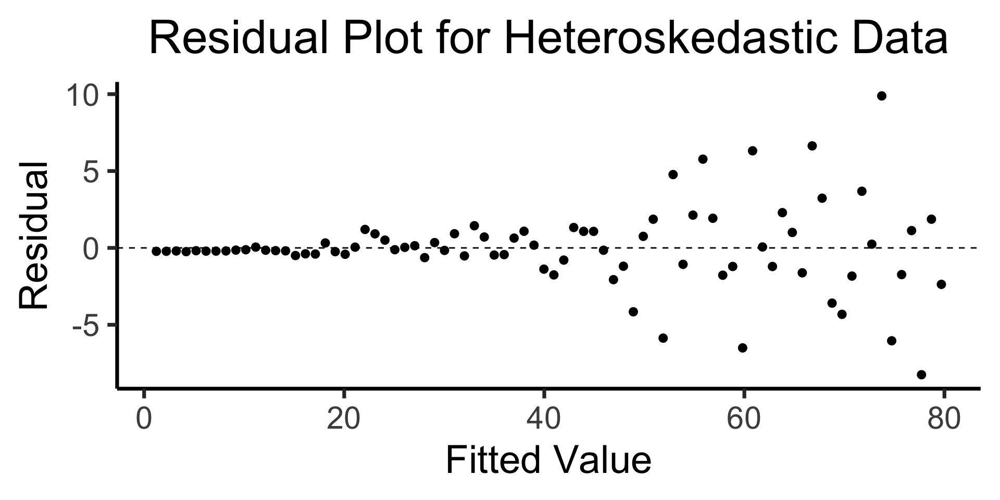
\[ \widehat{y}_i = \beta_0 + \beta_1x_{i,1} + \beta_2x_{i,2} + \cdots + \beta_M x_{i,M} \]
(ISLR, Fig 3.5): A pronounced non-linear relationship. Positive residuals (visible above the surface) tend to lie along the 45-degree line, where budgets are split evenly. Negative residuals (most not visible) tend to be away from this line, where budgets are more lopsided.
DSAN 5300-01 Week 2: Linear Regression